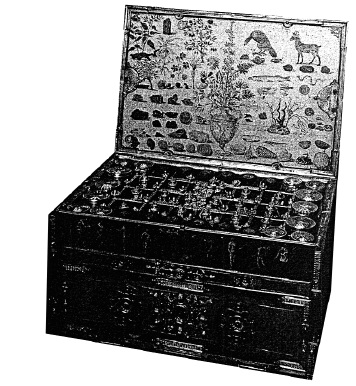

ŞEKİL 80. 18. yüzyıl ilk yarısından, gezi ecza sandığı: Altın kaplama pirinç kabartma süslerle bezenmiş, vernikli akçaağaçtan kutu şeklinde; kapakta şifa verici hayvan, bitki ve minerallerin betimleri yer almakta; içinde 44 kap bulunmakta; bunların 18’i gümüş mahfazalı cam şişecik, 14’ü vida kapaklı pirinç kutudur (Tarih Müzesi, Bern).37